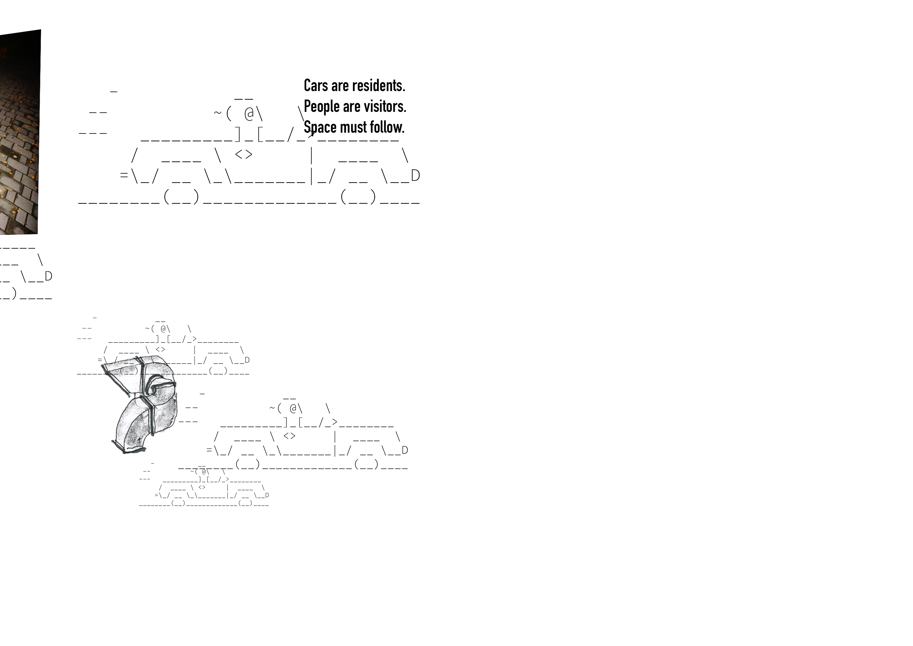
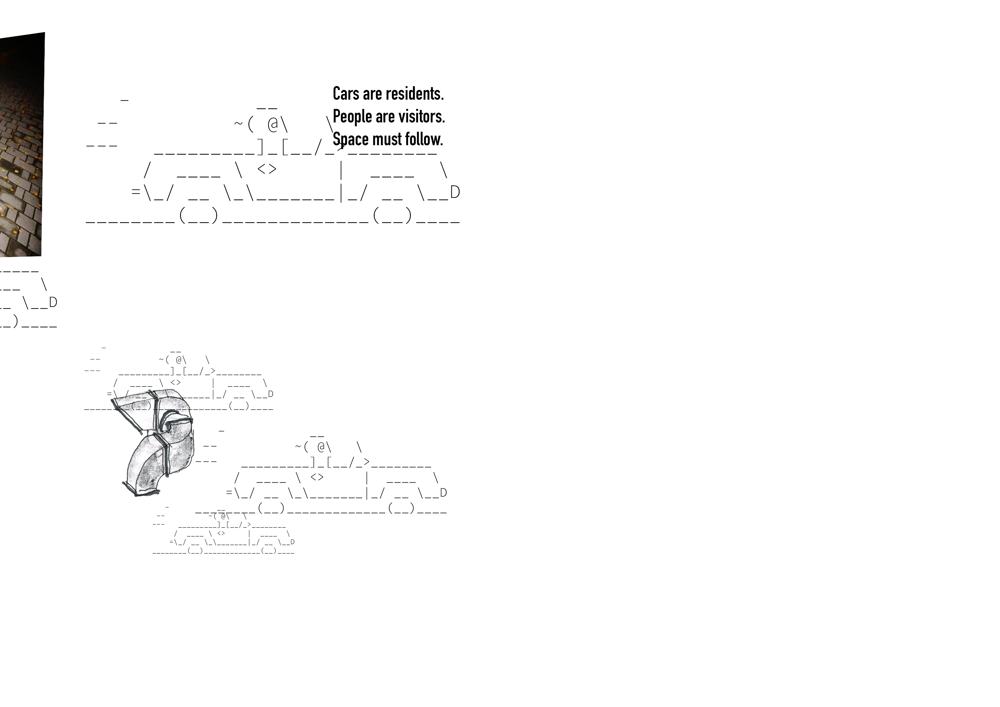
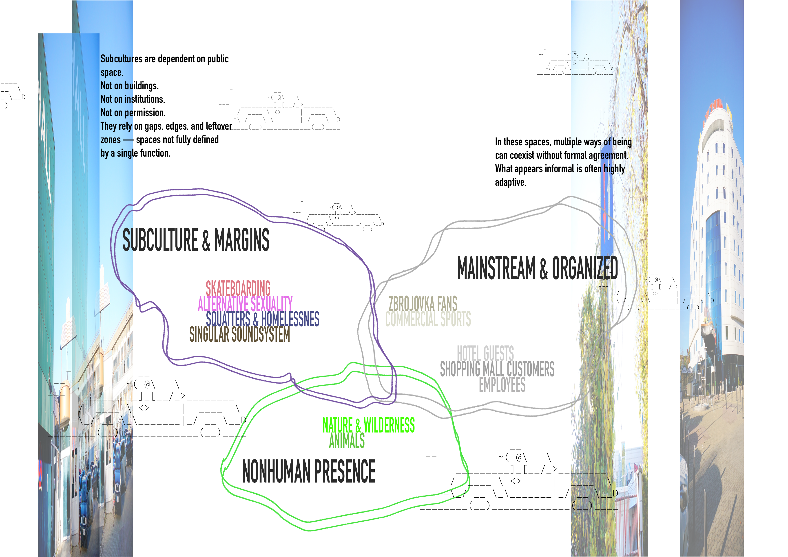
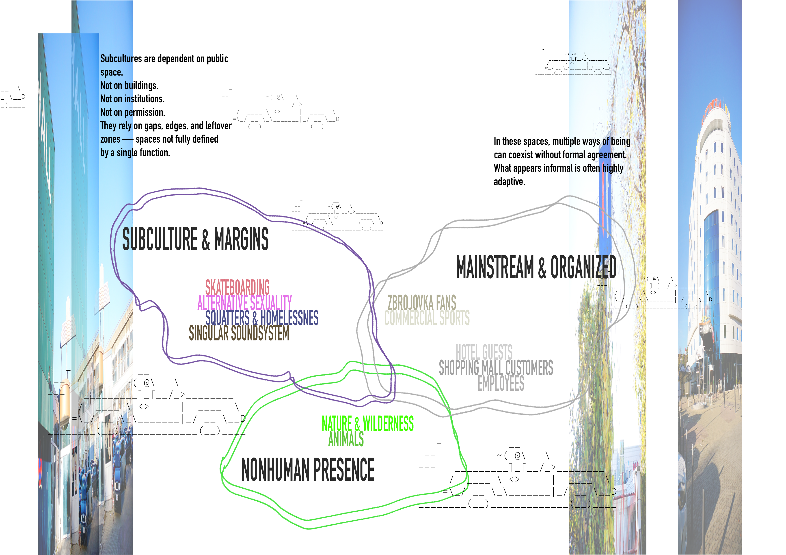
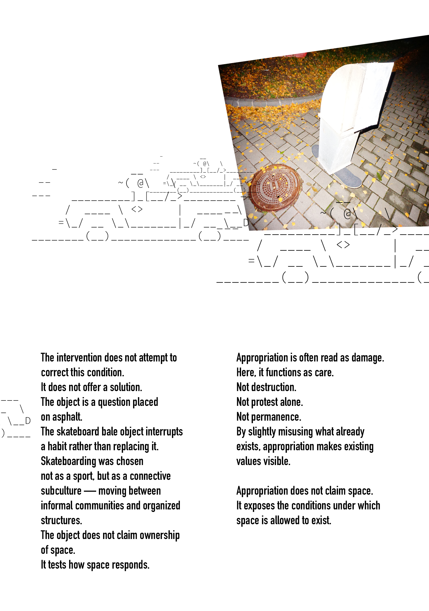
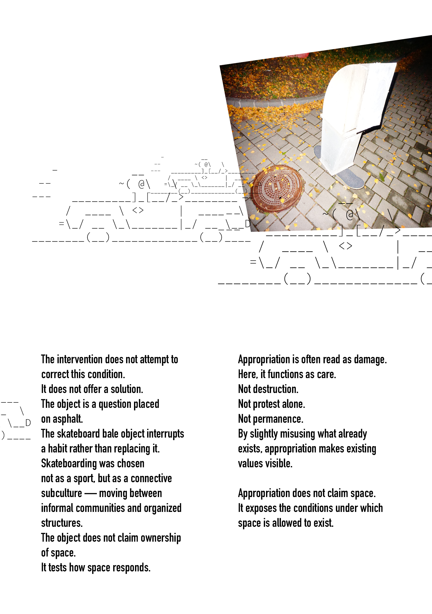

001 | 2025
 

 

 

2025/26
The project was developed under the guidance of MgA. Marek Hlavička and Ing. arch. Kateřina Singer.
The aim of the project is to change how people see and use neglected urban areas by introducing small, specific architectural additions that highlight the hidden qualities and value of ‘wild’ spaces in the city. The project addresses the brief for the Planyrka district in the western part of Brno, focusing on activating these forgotten areas. The central problem is that this territory is overwhelmingly dominated by parked cars, which occupy crucial space and prevent social groups and local communities from using the public realm. The proposal defines a strategy for temporary use and spatial reuse to actively reclaim this car- dedicated space.
Rather than offering a permanent solution or a fixed alternative, the project operates through temporary presence and appropriation. The interventions do not redesign the space, but enter into its existing conditions, allowing everyday use, response, and negotiation to unfold. By working at the scale of parking infrastructure and reusing existing materials, the project treats intervention as a method of inquiry — testing how space reacts when its dominant logic is momentarily disturbed within the urban wilderness of Planyrka.
This object is a skatable element constructed from reused metal air ducts. By reworking and reconnecting their original joints, the industrial components are transformed into a refined, skatable edge. The object functions as a physical proposal that complements the theoretical and video work, translating its themes into a physical form.